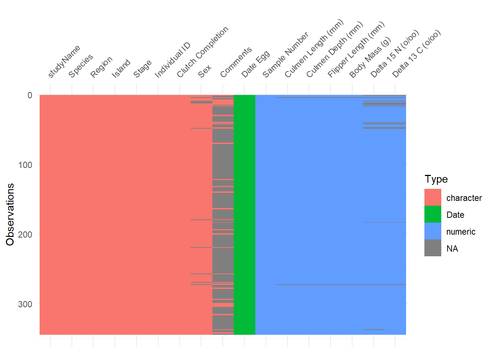
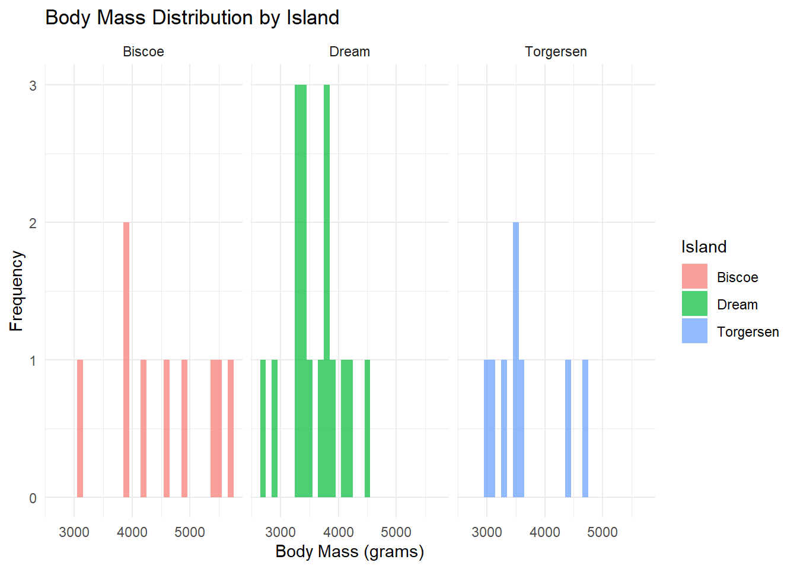

penguins<-palmerpenguins::penguins_raw
library(visdat)
library(tidyr)
library(tidyverse)
#> ── Attaching core tidyverse packages ──────────────────────── tidyverse 2.0.0 ──
#> ✔ dplyr 1.1.4 ✔ purrr 1.0.2
#> ✔ forcats 1.0.0 ✔ readr 2.1.5
#> ✔ ggplot2 3.5.1 ✔ stringr 1.5.1
#> ✔ lubridate 1.9.4 ✔ tibble 3.2.1
#> ── Conflicts ────────────────────────────────────────── tidyverse_conflicts() ──
#> ✖ dplyr::filter() masks stats::filter()
#> ✖ dplyr::lag() masks stats::lag()
#> ℹ Use the conflicted package (<http://conflicted.r-lib.org/>) to force all conflicts to become errors
library(ggpubr)day11-12
##In Exploratory data Analysis (2016) Peng usefully includes an EDA checklist:
1. Develop a question.
Usually we start EDA with a question that helps focus our interrogation.
Is there a relationship between island location and body size weight a in the palmer penguins dataset?
2. Read in your data and check the structure.
Questions to ask: What are the dimensions of the data (rows, columns)? What are the variable types? Have character variables been coerced to factors? If so, is that appropriate? Which numeric variables are continuous, which are integers, and which are binary?
str(penguins)
#> tibble [344 × 17] (S3: tbl_df/tbl/data.frame)
#> $ studyName : chr [1:344] "PAL0708" "PAL0708" "PAL0708" "PAL0708" ...
#> $ Sample Number : num [1:344] 1 2 3 4 5 6 7 8 9 10 ...
#> $ Species : chr [1:344] "Adelie Penguin (Pygoscelis adeliae)" "Adelie Penguin (Pygoscelis adeliae)" "Adelie Penguin (Pygoscelis adeliae)" "Adelie Penguin (Pygoscelis adeliae)" ...
#> $ Region : chr [1:344] "Anvers" "Anvers" "Anvers" "Anvers" ...
#> $ Island : chr [1:344] "Torgersen" "Torgersen" "Torgersen" "Torgersen" ...
#> $ Stage : chr [1:344] "Adult, 1 Egg Stage" "Adult, 1 Egg Stage" "Adult, 1 Egg Stage" "Adult, 1 Egg Stage" ...
#> $ Individual ID : chr [1:344] "N1A1" "N1A2" "N2A1" "N2A2" ...
#> $ Clutch Completion : chr [1:344] "Yes" "Yes" "Yes" "Yes" ...
#> $ Date Egg : Date[1:344], format: "2007-11-11" "2007-11-11" ...
#> $ Culmen Length (mm) : num [1:344] 39.1 39.5 40.3 NA 36.7 39.3 38.9 39.2 34.1 42 ...
#> $ Culmen Depth (mm) : num [1:344] 18.7 17.4 18 NA 19.3 20.6 17.8 19.6 18.1 20.2 ...
#> $ Flipper Length (mm): num [1:344] 181 186 195 NA 193 190 181 195 193 190 ...
#> $ Body Mass (g) : num [1:344] 3750 3800 3250 NA 3450 ...
#> $ Sex : chr [1:344] "MALE" "FEMALE" "FEMALE" NA ...
#> $ Delta 15 N (o/oo) : num [1:344] NA 8.95 8.37 NA 8.77 ...
#> $ Delta 13 C (o/oo) : num [1:344] NA -24.7 -25.3 NA -25.3 ...
#> $ Comments : chr [1:344] "Not enough blood for isotopes." NA NA "Adult not sampled." ...
#> - attr(*, "spec")=
#> .. cols(
#> .. studyName = col_character(),
#> .. `Sample Number` = col_double(),
#> .. Species = col_character(),
#> .. Region = col_character(),
#> .. Island = col_character(),
#> .. Stage = col_character(),
#> .. `Individual ID` = col_character(),
#> .. `Clutch Completion` = col_character(),
#> .. `Date Egg` = col_date(format = ""),
#> .. `Culmen Length (mm)` = col_double(),
#> .. `Culmen Depth (mm)` = col_double(),
#> .. `Flipper Length (mm)` = col_double(),
#> .. `Body Mass (g)` = col_double(),
#> .. Sex = col_character(),
#> .. `Delta 15 N (o/oo)` = col_double(),
#> .. `Delta 13 C (o/oo)` = col_double(),
#> .. Comments = col_character()
#> .. )
sapply(penguins, is.numeric)
#> studyName Sample Number Species Region
#> FALSE TRUE FALSE FALSE
#> Island Stage Individual ID Clutch Completion
#> FALSE FALSE FALSE FALSE
#> Date Egg Culmen Length (mm) Culmen Depth (mm) Flipper Length (mm)
#> FALSE TRUE TRUE TRUE
#> Body Mass (g) Sex Delta 15 N (o/oo) Delta 13 C (o/oo)
#> TRUE FALSE TRUE TRUE
#> Comments
#> FALSEWhat are the dimensions of the data? There are 344 rows and 17 columns in this dataset.
What are the variable types? Penguins data is a list that has tbl_df, tbl, and data.frame structure. The variable types include numbers, characters, and dates.
Have character variables been coerced to factors? If so, is that appropriate? No character variables have been coerced to factors in this data set. It could be appropriate depending on the analysis done, for penguin species a number could be given to represent the kind.
Which numeric variables are continuous (these variables are numeric, but they can take on any value within a range, including decimals ), which are integers(these variables have discrete values with no decimal points), and which are binary (binary variables typically have only two unique values, such as 0 and 1, “yes” and “no”, or “TRUE” and “FALSE”)?
str(penguins)
#> tibble [344 × 17] (S3: tbl_df/tbl/data.frame)
#> $ studyName : chr [1:344] "PAL0708" "PAL0708" "PAL0708" "PAL0708" ...
#> $ Sample Number : num [1:344] 1 2 3 4 5 6 7 8 9 10 ...
#> $ Species : chr [1:344] "Adelie Penguin (Pygoscelis adeliae)" "Adelie Penguin (Pygoscelis adeliae)" "Adelie Penguin (Pygoscelis adeliae)" "Adelie Penguin (Pygoscelis adeliae)" ...
#> $ Region : chr [1:344] "Anvers" "Anvers" "Anvers" "Anvers" ...
#> $ Island : chr [1:344] "Torgersen" "Torgersen" "Torgersen" "Torgersen" ...
#> $ Stage : chr [1:344] "Adult, 1 Egg Stage" "Adult, 1 Egg Stage" "Adult, 1 Egg Stage" "Adult, 1 Egg Stage" ...
#> $ Individual ID : chr [1:344] "N1A1" "N1A2" "N2A1" "N2A2" ...
#> $ Clutch Completion : chr [1:344] "Yes" "Yes" "Yes" "Yes" ...
#> $ Date Egg : Date[1:344], format: "2007-11-11" "2007-11-11" ...
#> $ Culmen Length (mm) : num [1:344] 39.1 39.5 40.3 NA 36.7 39.3 38.9 39.2 34.1 42 ...
#> $ Culmen Depth (mm) : num [1:344] 18.7 17.4 18 NA 19.3 20.6 17.8 19.6 18.1 20.2 ...
#> $ Flipper Length (mm): num [1:344] 181 186 195 NA 193 190 181 195 193 190 ...
#> $ Body Mass (g) : num [1:344] 3750 3800 3250 NA 3450 ...
#> $ Sex : chr [1:344] "MALE" "FEMALE" "FEMALE" NA ...
#> $ Delta 15 N (o/oo) : num [1:344] NA 8.95 8.37 NA 8.77 ...
#> $ Delta 13 C (o/oo) : num [1:344] NA -24.7 -25.3 NA -25.3 ...
#> $ Comments : chr [1:344] "Not enough blood for isotopes." NA NA "Adult not sampled." ...
#> - attr(*, "spec")=
#> .. cols(
#> .. studyName = col_character(),
#> .. `Sample Number` = col_double(),
#> .. Species = col_character(),
#> .. Region = col_character(),
#> .. Island = col_character(),
#> .. Stage = col_character(),
#> .. `Individual ID` = col_character(),
#> .. `Clutch Completion` = col_character(),
#> .. `Date Egg` = col_date(format = ""),
#> .. `Culmen Length (mm)` = col_double(),
#> .. `Culmen Depth (mm)` = col_double(),
#> .. `Flipper Length (mm)` = col_double(),
#> .. `Body Mass (g)` = col_double(),
#> .. Sex = col_character(),
#> .. `Delta 15 N (o/oo)` = col_double(),
#> .. `Delta 13 C (o/oo)` = col_double(),
#> .. Comments = col_character()
#> .. )Culmen length, culmen depth, Delta 15N, and and Delta 13 c are continuous data in this tibble.The discrete values are the sample number,flipper length, and body mass.Binary data in this are clutch completion and sex.
3. Summarize the data.Use summary() and table(), vis_dat() and ask the following sorts of questions:
summary(penguins)
#> studyName Sample Number Species Region
#> Length:344 Min. : 1.00 Length:344 Length:344
#> Class :character 1st Qu.: 29.00 Class :character Class :character
#> Mode :character Median : 58.00 Mode :character Mode :character
#> Mean : 63.15
#> 3rd Qu.: 95.25
#> Max. :152.00
#>
#> Island Stage Individual ID Clutch Completion
#> Length:344 Length:344 Length:344 Length:344
#> Class :character Class :character Class :character Class :character
#> Mode :character Mode :character Mode :character Mode :character
#>
#>
#>
#>
#> Date Egg Culmen Length (mm) Culmen Depth (mm) Flipper Length (mm)
#> Min. :2007-11-09 Min. :32.10 Min. :13.10 Min. :172.0
#> 1st Qu.:2007-11-28 1st Qu.:39.23 1st Qu.:15.60 1st Qu.:190.0
#> Median :2008-11-09 Median :44.45 Median :17.30 Median :197.0
#> Mean :2008-11-27 Mean :43.92 Mean :17.15 Mean :200.9
#> 3rd Qu.:2009-11-16 3rd Qu.:48.50 3rd Qu.:18.70 3rd Qu.:213.0
#> Max. :2009-12-01 Max. :59.60 Max. :21.50 Max. :231.0
#> NA's :2 NA's :2 NA's :2
#> Body Mass (g) Sex Delta 15 N (o/oo) Delta 13 C (o/oo)
#> Min. :2700 Length:344 Min. : 7.632 Min. :-27.02
#> 1st Qu.:3550 Class :character 1st Qu.: 8.300 1st Qu.:-26.32
#> Median :4050 Mode :character Median : 8.652 Median :-25.83
#> Mean :4202 Mean : 8.733 Mean :-25.69
#> 3rd Qu.:4750 3rd Qu.: 9.172 3rd Qu.:-25.06
#> Max. :6300 Max. :10.025 Max. :-23.79
#> NA's :2 NA's :14 NA's :13
#> Comments
#> Length:344
#> Class :character
#> Mode :character
#>
#>
#>
#>
vis_dat(penguins)
penguins <-penguins %>%
drop_na()
#range
range(penguins$`Sample Number`)
#> [1] 1 140
range(penguins$`Culmen Length (mm)`)
#> [1] 35.9 58.0
range(penguins$`Culmen Depth (mm)`)
#> [1] 13.7 20.0
range(penguins$`Flipper Length (mm)`)
#> [1] 172 225
range(penguins$`Body Mass (g)`)
#> [1] 2700 5700
range(penguins$`Delta 15 N (o/oo)`)
#> [1] 7.99184 10.02544
range(penguins$`Delta 13 C (o/oo)`)
#> [1] -26.84272 -23.89017Are there missing observations?
There’s missing values/ na values in the clutch completion, comments, Delta 15N and Delta 13c columns,
What is the range of the numeric variables?
The range of sample numbers: 1-152 The range of culmen length (mm):35.9-58.0 The range of culmen depth (mm): 13.7- 20.0 The range of flipper length (mm):172 -225 The range of body mass(g): 2700 - 5700 The range of delta 15n: 7.99184 - 10.02544 The range of delta delta 13c:-26.84272 - -23.89017
Do the ranges seem reasonable, or are there values that cause you to worry about data quality?
These ranges seem normal, except for the delta 13c. There are negative numbers in the data.
Where are the means and medians of each variable with respect to their minimums and maximums?
#mean
summary(penguins$`Sample Number`) #mean= 51.71 median=39.00
#> Min. 1st Qu. Median Mean 3rd Qu. Max.
#> 1.00 23.25 39.00 51.71 68.25 140.00
summary(penguins$`Culmen Length (mm)`) #mean= 44.71 median=44.50
#> Min. 1st Qu. Median Mean 3rd Qu. Max.
#> 35.90 39.33 44.50 44.71 49.60 58.00
summary(penguins$`Culmen Depth (mm)`) #mean= 17.65 median=17.90
#> Min. 1st Qu. Median Mean 3rd Qu. Max.
#> 13.70 16.60 17.90 17.65 19.15 20.00
summary(penguins$`Flipper Length (mm)`) #mean= 196.7 median=195.5
#> Min. 1st Qu. Median Mean 3rd Qu. Max.
#> 172.0 190.0 195.5 196.7 201.5 225.0
summary(penguins$`Body Mass (g)`) #mean= 3877 median= 3738
#> Min. 1st Qu. Median Mean 3rd Qu. Max.
#> 2700 3344 3738 3877 4238 5700
summary(penguins$`Delta 15 N (o/oo)`) #mean= 9.019 median= 9.041
#> Min. 1st Qu. Median Mean 3rd Qu. Max.
#> 7.992 8.627 9.041 9.019 9.374 10.025
summary(penguins$`Delta 13 C (o/oo)`) #mean= -25.33 median=-25.33
#> Min. 1st Qu. Median Mean 3rd Qu. Max.
#> -26.84 -26.08 -25.16 -25.33 -24.62 -23.89For factor and character variables: How many observations are there in each level or category?
penguins %>%
count(Species)
#> # A tibble: 3 × 2
#> Species n
#> <chr> <int>
#> 1 Adelie Penguin (Pygoscelis adeliae) 13
#> 2 Chinstrap penguin (Pygoscelis antarctica) 14
#> 3 Gentoo penguin (Pygoscelis papua) 7
penguins %>%
count(Island)
#> # A tibble: 3 × 2
#> Island n
#> <chr> <int>
#> 1 Biscoe 9
#> 2 Dream 17
#> 3 Torgersen 8
penguins %>%
count(Sex)
#> # A tibble: 2 × 2
#> Sex n
#> <chr> <int>
#> 1 FEMALE 18
#> 2 MALE 16species: Species n
island: Island n
sex: Sex n
Table the integer and binary variables: do the counts seem reasonable? If they don’t seem reasonable, then inspect the questionable rows.
#The integer column is flipper_length_mm, and the binary variable is sex
table(penguins$`Flipper Length (mm)`)
#>
#> 172 180 181 185 187 190 192 193 195 196 197 198 200 202 205 208 210 214 216 225
#> 1 1 3 1 2 2 2 3 2 1 3 2 2 1 1 1 1 2 1 2
# Table the binary variable: sex
table(penguins$Sex)
#>
#> FEMALE MALE
#> 18 16These counts seem reasonable in the table.
4:Look at the top and the bottom of your data using head() and tail().
This will give you a sense of the structure of the data and the type of variables you are dealing with.
# View the first few rows (top of the dataset)
head(penguins)
#> # A tibble: 6 × 17
#> studyName `Sample Number` Species Region Island Stage `Individual ID`
#> <chr> <dbl> <chr> <chr> <chr> <chr> <chr>
#> 1 PAL0708 7 Adelie Penguin … Anvers Torge… Adul… N4A1
#> 2 PAL0708 8 Adelie Penguin … Anvers Torge… Adul… N4A2
#> 3 PAL0708 29 Adelie Penguin … Anvers Biscoe Adul… N18A1
#> 4 PAL0708 30 Adelie Penguin … Anvers Biscoe Adul… N18A2
#> 5 PAL0708 39 Adelie Penguin … Anvers Dream Adul… N25A1
#> 6 PAL0809 69 Adelie Penguin … Anvers Torge… Adul… N32A1
#> # ℹ 10 more variables: `Clutch Completion` <chr>, `Date Egg` <date>,
#> # `Culmen Length (mm)` <dbl>, `Culmen Depth (mm)` <dbl>,
#> # `Flipper Length (mm)` <dbl>, `Body Mass (g)` <dbl>, Sex <chr>,
#> # `Delta 15 N (o/oo)` <dbl>, `Delta 13 C (o/oo)` <dbl>, Comments <chr>
# View the last few rows (bottom of the dataset)
tail(penguins)
#> # A tibble: 6 × 17
#> studyName `Sample Number` Species Region Island Stage `Individual ID`
#> <chr> <dbl> <chr> <chr> <chr> <chr> <chr>
#> 1 PAL0809 27 Chinstrap pengu… Anvers Dream Adul… N61A1
#> 2 PAL0809 28 Chinstrap pengu… Anvers Dream Adul… N61A2
#> 3 PAL0809 39 Chinstrap pengu… Anvers Dream Adul… N72A1
#> 4 PAL0809 40 Chinstrap pengu… Anvers Dream Adul… N72A2
#> 5 PAL0910 65 Chinstrap pengu… Anvers Dream Adul… N99A1
#> 6 PAL0910 66 Chinstrap pengu… Anvers Dream Adul… N99A2
#> # ℹ 10 more variables: `Clutch Completion` <chr>, `Date Egg` <date>,
#> # `Culmen Length (mm)` <dbl>, `Culmen Depth (mm)` <dbl>,
#> # `Flipper Length (mm)` <dbl>, `Body Mass (g)` <dbl>, Sex <chr>,
#> # `Delta 15 N (o/oo)` <dbl>, `Delta 13 C (o/oo)` <dbl>, Comments <chr>Be alert to structure and possible data problems or anomalies. Use skimr::skim() to get a quick overview of the data structure and missing values.
skimr::skim(penguins)| Name | penguins |
| Number of rows | 34 |
| Number of columns | 17 |
| _______________________ | |
| Column type frequency: | |
| character | 9 |
| Date | 1 |
| numeric | 7 |
| ________________________ | |
| Group variables | None |
Variable type: character
| skim_variable | n_missing | complete_rate | min | max | empty | n_unique | whitespace |
|---|---|---|---|---|---|---|---|
| studyName | 0 | 1 | 7 | 7 | 0 | 3 | 0 |
| Species | 0 | 1 | 33 | 41 | 0 | 3 | 0 |
| Region | 0 | 1 | 6 | 6 | 0 | 1 | 0 |
| Island | 0 | 1 | 5 | 9 | 0 | 3 | 0 |
| Stage | 0 | 1 | 18 | 18 | 0 | 1 | 0 |
| Individual ID | 0 | 1 | 4 | 5 | 0 | 32 | 0 |
| Clutch Completion | 0 | 1 | 2 | 2 | 0 | 1 | 0 |
| Sex | 0 | 1 | 4 | 6 | 0 | 2 | 0 |
| Comments | 0 | 1 | 37 | 37 | 0 | 1 | 0 |
Variable type: Date
| skim_variable | n_missing | complete_rate | min | max | median | n_unique |
|---|---|---|---|---|---|---|
| Date Egg | 0 | 1 | 2007-11-10 | 2009-12-01 | 2008-11-06 | 17 |
Variable type: numeric
| skim_variable | n_missing | complete_rate | mean | sd | p0 | p25 | p50 | p75 | p100 | hist |
|---|---|---|---|---|---|---|---|---|---|---|
| Sample Number | 0 | 1 | 51.71 | 43.97 | 1.00 | 23.25 | 39.00 | 68.25 | 140.00 | ▇▅▂▁▃ |
| Culmen Length (mm) | 0 | 1 | 44.71 | 5.80 | 35.90 | 39.33 | 44.50 | 49.60 | 58.00 | ▇▆▅▇▁ |
| Culmen Depth (mm) | 0 | 1 | 17.65 | 1.87 | 13.70 | 16.60 | 17.90 | 19.15 | 20.00 | ▂▂▃▇▇ |
| Flipper Length (mm) | 0 | 1 | 196.74 | 12.47 | 172.00 | 190.00 | 195.50 | 201.50 | 225.00 | ▃▇▇▃▂ |
| Body Mass (g) | 0 | 1 | 3877.21 | 747.33 | 2700.00 | 3343.75 | 3737.50 | 4237.50 | 5700.00 | ▅▇▅▂▂ |
| Delta 15 N (o/oo) | 0 | 1 | 9.02 | 0.54 | 7.99 | 8.63 | 9.04 | 9.37 | 10.03 | ▅▃▇▆▃ |
| Delta 13 C (o/oo) | 0 | 1 | -25.33 | 0.83 | -26.84 | -26.08 | -25.16 | -24.62 | -23.89 | ▃▆▅▇▅ |
5. Try to answer your question using descriptive measures.
These can include evaluating distributions, central tendency and variation.
# Summary statistics of body mass by island
penguins_summary <- penguins %>%
group_by(Island) %>%
summarise(
mean_weight = mean(`Body Mass (g)`, na.rm = TRUE),
median_weight = median(`Body Mass (g)`, na.rm = TRUE),
sd_weight = sd(`Body Mass (g)`, na.rm = TRUE),
min_weight = min(`Body Mass (g)`, na.rm = TRUE),
max_weight = max(`Body Mass (g)`, na.rm = TRUE)
)
# View summary statistics
print(penguins_summary)
#> # A tibble: 3 × 6
#> Island mean_weight median_weight sd_weight min_weight max_weight
#> <chr> <dbl> <dbl> <dbl> <dbl> <dbl>
#> 1 Biscoe 4608. 4650 864. 3150 5700
#> 2 Dream 3593. 3500 464. 2700 4500
#> 3 Torgersen 3659. 3500 592. 3050 4675
#A higher standard deviation indicates more variability, and a lower standard deviation suggests that most values are closer to the mean.
#median is a measure of central tendency that is less sensitive to outliers or skewed data than the mean.
#Visualization
# Histogram of body mass by island
ggplot(penguins, aes(x = `Body Mass (g)`, fill = Island)) +
geom_histogram(binwidth = 100, position = "dodge", alpha = 0.7) +
labs(title = "Body Mass Distribution by Island",
x = "Body Mass (grams)", y = "Frequency") +
facet_wrap(~Island) +
theme_minimal()
Penguins on Biscoe island have the highest average (mean) and median body mass, followed by those on Torgersen, and then Dream island. This central tendency suggests a relationship between island and body mass. The highest variability in body size is in Biscoe penguins, but even with higher variability they have bigger body sizes on Biscoe island.
- Follow up with additional questions